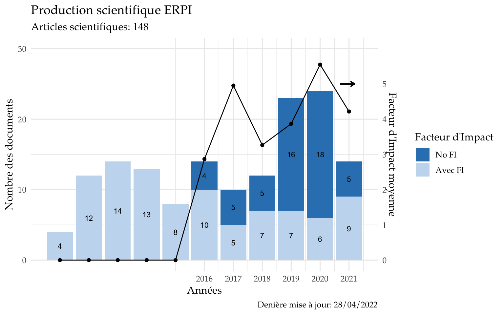
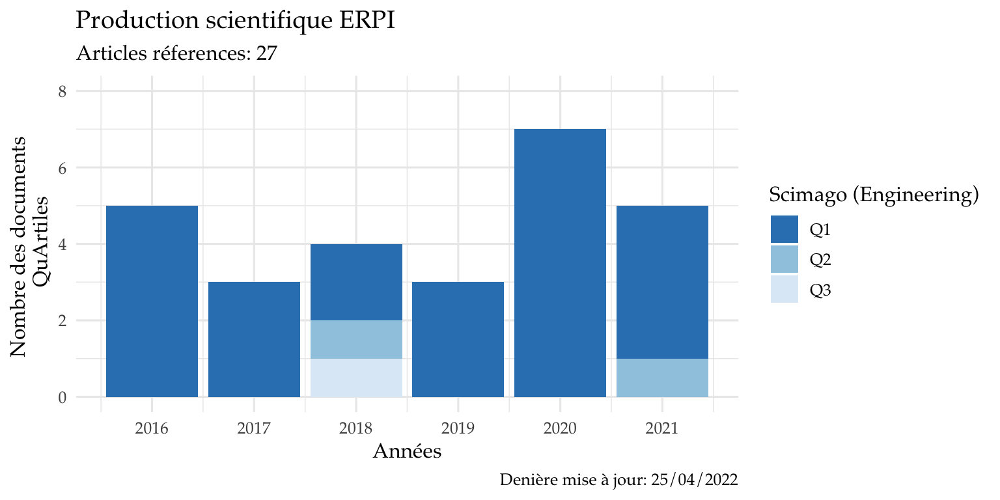
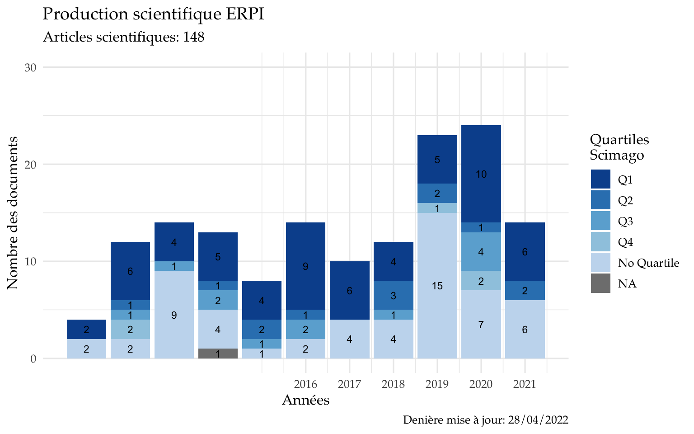

Production de connaissances et activités concourant au rayonnement et à l’attractivité scientifique.
| Type | Production |
|---|---|
| Journaux / revues | |
| Articles scientifiques | 77 |
| Articles de sythèse / revues bibliographiques | |
| Autres articles (articles publiés dans des revues professionnelles ou techniques, etc) | |
| Ouvrages | |
| Monographies, éditions critiques, traductions | |
| Direction et coordination d’ouvrages scientifiques / édition scientifique | |
| Direction et coordination d’ouvrages scientifiques / édition scientifique en anglais ou dans une autre langue étrangère | |
| Chapitres d’ouvrage | |
| Chapitres d’ouvrages en anglais ou dans une autre langue étrangère | |
| Thèse éditées | 16 |
| Production dans des colloques / congrès, séminaires de recherche | |
| Editions d’actes de colloques / congrès | |
| Articles publiés dans des actes de colloques / congrès | 81 |
| Autres produits présentés dans des colloques / congrès et des séminaires de recherche | |
| Produits et outils informatiques | |
| Logiciels | |
| Base de données | |
| Outils d’aide à la désicion | |
| Cohortes | |
| Développements instrumentaux et méthodologiques | |
| Prototypes et démostrateurs | |
| Plateformes et observatoires | |
| Autres produits propres à une discipline | |
| Créations artistiques théorisées, mises en scènes, films | |
| Activités éditoriales | |
| Participation à des comités éditoriaux (journaux scientifiques, revues, collections, etc) | |
| Direction de collection et de séries | |
| Activités d’évaluation | |
| Evaluation d’articles et d’ouvrages scientifiques (relecture d’articles / reviewing) | |
Last update from HAL: “09 May, 2021”


NA signiife que on l’article n’est pas reporte dans les Q’s sur ce section de Scimago.
